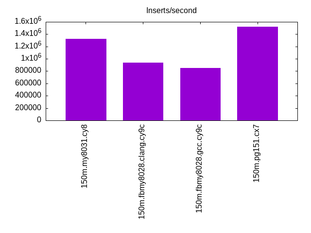
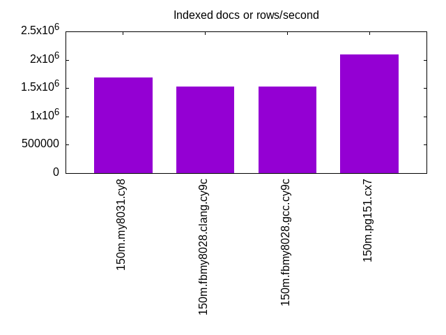
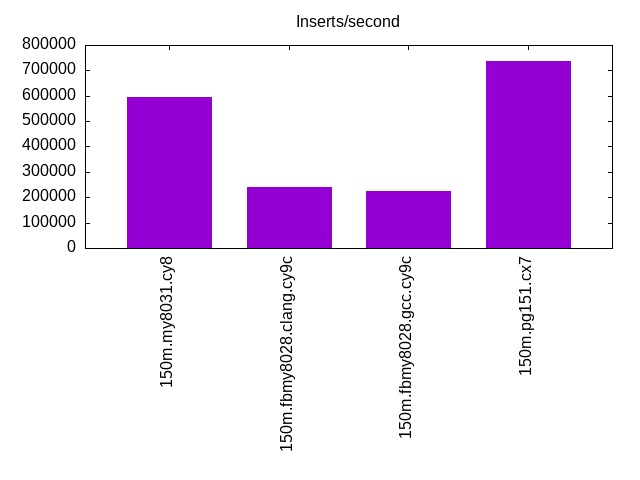
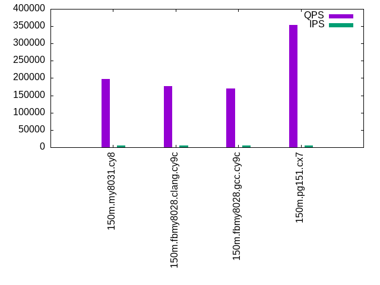
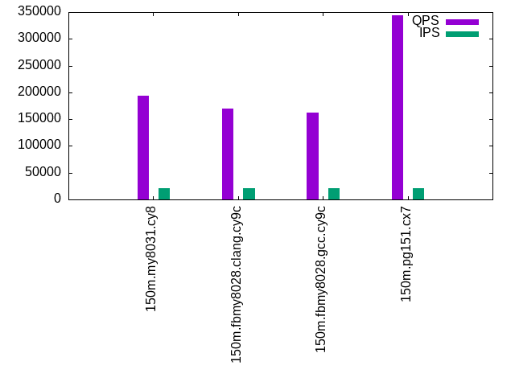
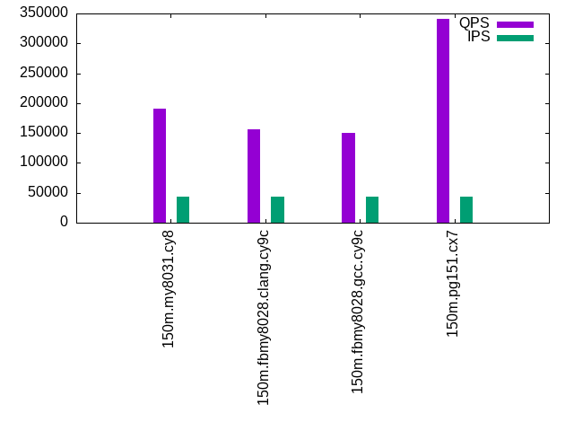

This is a report for the insert benchmark with 150M docs and 44 client(s). It is generated by scripts (bash, awk, sed) and Tufte might not be impressed. An overview of the insert benchmark is here and a short update is here. Below, by DBMS, I mean DBMS+version.config. An example is my8020.c10b40 where my means MySQL, 8020 is version 8.0.20 and c10b40 is the name for the configuration file.
The test server is an c7g.16xl with 64 cores, 128G RAM and io2 storage (5T, 100K IOPs). The benchmark was run with 44 clients and there was 1 or 2 connections per client (1 for queries, 1 for inserts). The benchmark loads 150M rows without secondary indexes, creates secondary indexes, loads another 50M rows then does 3 read+write tests for one hour each that do queries as fast as possible with 100, 500 and then 1000 writes/second/client concurrent with the queries. The database is cached by the storage engine and the only IO is for writes. Clients and the DBMS share one server. The per-database configs are in the per-database subdirectories here.
The tested DBMS are:
The numbers are inserts/s for l.i0 and l.i1, indexed docs (or rows) /s for l.x and queries/s for q*.2. The values are the average rate over the entire test for inserts (IPS) and queries (QPS). The range of values for IPS and QPS is split into 3 parts: bottom 25%, middle 50%, top 25%. Values in the bottom 25% have a red background, values in the top 25% have a green background and values in the middle have no color. A gray background is used for values that can be ignored because the DBMS did not sustain the target insert rate. Red backgrounds are not used when the minimum value is within 80% of the max value.
| dbms | l.i0 | l.x | l.i1 | q100.1 | q500.1 | q1000.1 |
|---|---|---|---|---|---|---|
| 150m.my8031.cy8 | 1327311 | 1692864 | 595782 | 197086 | 193475 | 190101 |
| 150m.fbmy8028.clang.cy9c | 936228 | 1521125 | 240499 | 176211 | 169581 | 156082 |
| 150m.fbmy8028.gcc.cy9c | 852501 | 1521125 | 225016 | 169724 | 162922 | 149651 |
| 150m.pg151.cx7 | 1519675 | 2099152 | 738434 | 353185 | 344137 | 341230 |
This lists the average rate of inserts/s for the tests that do inserts concurrent with queries. For such tests the query rate is listed in the table above. The read+write tests are setup so that the insert rate should match the target rate every second. Cells that are not at least 95% of the target have a red background to indicate a failure to satisfy the target.
| dbms | q100.1 | q500.1 | q1000.1 |
|---|---|---|---|
| my8031.cy8 | 4343 | 21716 | 43433 |
| fbmy8028.clang.cy9c | 4343 | 21716 | 43433 |
| fbmy8028.gcc.cy9c | 4343 | 21716 | 43445 |
| pg151.cx7 | 4344 | 21716 | 43433 |
| target | 4400 | 22000 | 44000 |
l.i0: load without secondary indexes. Graphs for performance per 1-second interval are here.
Average throughput:
Insert response time histogram: each cell has the percentage of responses that take <= the time in the header and max is the max response time in seconds. For the max column values in the top 25% of the range have a red background and in the bottom 25% of the range have a green background. The red background is not used when the min value is within 80% of the max value.
| dbms | 256us | 1ms | 4ms | 16ms | 64ms | 256ms | 1s | 4s | 16s | gt | max |
|---|---|---|---|---|---|---|---|---|---|---|---|
| my8031.cy8 | 18.895 | 80.865 | 0.155 | 0.041 | 0.044 | 0.138 | |||||
| fbmy8028.clang.cy9c | 4.798 | 91.345 | 3.747 | 0.103 | 0.008 | 0.095 | |||||
| fbmy8028.gcc.cy9c | 4.227 | 79.566 | 16.099 | 0.090 | 0.018 | 0.074 | |||||
| pg151.cx7 | 99.851 | 0.149 | nonzero | 0.005 |
Performance metrics for the DBMS listed above. Some are normalized by throughput, others are not. Legend for results is here.
ips qps rps rmbps wps wmbps rpq rkbpq wpi wkbpi csps cpups cspq cpupq dbgb1 dbgb2 rss maxop p50 p99 tag 1327311 0 0 0.0 1996.5 337.8 0.000 0.000 0.002 0.261 232783 34.5 0.175 17 7.2 135.8 14.6 0.138 108486 27870 150m.my8031.cy8 936228 0 0 0.0 1381.8 312.6 0.000 0.000 0.001 0.342 479580 41.7 0.512 29 5.4 5.9 1.9 0.095 100393 15883 150m.fbmy8028.clang.cy9c 852501 0 0 0.0 1282.0 291.4 0.000 0.000 0.002 0.350 528785 43.6 0.620 33 5.6 6.1 1.9 0.074 99993 39676 150m.fbmy8028.gcc.cy9c 1519675 0 0 0.0 2579.9 598.3 0.000 0.000 0.002 0.403 178366 29.1 0.117 12 10.0 27.1 8.0 0.005 146648 48748 150m.pg151.cx7
l.x: create secondary indexes.
Average throughput:
Performance metrics for the DBMS listed above. Some are normalized by throughput, others are not. Legend for results is here.
ips qps rps rmbps wps wmbps rpq rkbpq wpi wkbpi csps cpups cspq cpupq dbgb1 dbgb2 rss maxop p50 p99 tag 1692864 0 9872 617.1 33230.1 1493.8 0.006 0.373 0.020 0.904 164504 25.4 0.097 10 15.6 144.2 16.1 0.002 NA NA 150m.my8031.cy8 1521125 0 8 0.3 1539.6 340.9 0.000 0.000 0.001 0.229 11200 27.5 0.007 12 7.2 7.8 8.3 0.002 NA NA 150m.fbmy8028.clang.cy9c 1521125 0 8 0.3 1526.0 340.7 0.000 0.000 0.001 0.229 11586 27.5 0.008 12 7.3 7.8 9.4 0.009 NA NA 150m.fbmy8028.gcc.cy9c 2099152 0 0 0.0 2387.8 575.2 0.000 0.000 0.001 0.281 36333 10.6 0.017 3 19.3 44.8 0.0 0.032 NA NA 150m.pg151.cx7
l.i1: continue load after secondary indexes created. Graphs for performance per 1-second interval are here.
Average throughput:
Insert response time histogram: each cell has the percentage of responses that take <= the time in the header and max is the max response time in seconds. For the max column values in the top 25% of the range have a red background and in the bottom 25% of the range have a green background. The red background is not used when the min value is within 80% of the max value.
| dbms | 256us | 1ms | 4ms | 16ms | 64ms | 256ms | 1s | 4s | 16s | gt | max |
|---|---|---|---|---|---|---|---|---|---|---|---|
| my8031.cy8 | 99.240 | 0.391 | 0.206 | 0.162 | nonzero | 0.277 | |||||
| fbmy8028.clang.cy9c | 0.998 | 11.550 | 87.367 | 0.067 | 0.018 | 0.082 | |||||
| fbmy8028.gcc.cy9c | 0.410 | 9.896 | 89.601 | 0.073 | 0.020 | 0.075 | |||||
| pg151.cx7 | 11.377 | 88.585 | 0.038 | 0.012 |
Performance metrics for the DBMS listed above. Some are normalized by throughput, others are not. Legend for results is here.
ips qps rps rmbps wps wmbps rpq rkbpq wpi wkbpi csps cpups cspq cpupq dbgb1 dbgb2 rss maxop p50 p99 tag 595782 0 5244 81.9 3968.3 453.5 0.009 0.141 0.007 0.779 257310 37.9 0.432 41 27.8 156.4 32.8 0.277 30377 400 150m.my8031.cy8 240499 0 148 18.1 1371.0 318.7 0.001 0.077 0.006 1.357 154361 20.9 0.642 56 16.7 18.0 10.1 0.082 5744 4845 150m.fbmy8028.clang.cy9c 225016 0 138 17.0 1331.1 309.4 0.001 0.077 0.006 1.408 130949 20.5 0.582 58 11.6 12.9 11.2 0.075 5344 1498 150m.fbmy8028.gcc.cy9c 738434 0 0 0.0 3565.1 836.2 0.000 0.000 0.005 1.160 337559 35.9 0.457 31 33.6 82.3 23.2 0.012 46850 1998 150m.pg151.cx7
q100.1: range queries with 100 insert/s per client. Graphs for performance per 1-second interval are here.
Average throughput:
Query response time histogram: each cell has the percentage of responses that take <= the time in the header and max is the max response time in seconds. For max values in the top 25% of the range have a red background and in the bottom 25% of the range have a green background. The red background is not used when the min value is within 80% of the max value.
| dbms | 256us | 1ms | 4ms | 16ms | 64ms | 256ms | 1s | 4s | 16s | gt | max |
|---|---|---|---|---|---|---|---|---|---|---|---|
| my8031.cy8 | 93.425 | 6.568 | 0.006 | nonzero | nonzero | 0.019 | |||||
| fbmy8028.clang.cy9c | 80.079 | 19.918 | 0.003 | nonzero | nonzero | 0.018 | |||||
| fbmy8028.gcc.cy9c | 71.377 | 28.620 | 0.003 | nonzero | nonzero | 0.016 | |||||
| pg151.cx7 | 99.886 | 0.109 | 0.005 | nonzero | nonzero | 0.024 |
Insert response time histogram: each cell has the percentage of responses that take <= the time in the header and max is the max response time in seconds. For max values in the top 25% of the range have a red background and in the bottom 25% of the range have a green background. The red background is not used when the min value is within 80% of the max value.
| dbms | 256us | 1ms | 4ms | 16ms | 64ms | 256ms | 1s | 4s | 16s | gt | max |
|---|---|---|---|---|---|---|---|---|---|---|---|
| my8031.cy8 | 98.355 | 1.645 | 0.015 | ||||||||
| fbmy8028.clang.cy9c | 0.395 | 98.939 | 0.667 | 0.014 | |||||||
| fbmy8028.gcc.cy9c | 0.034 | 98.628 | 1.338 | 0.016 | |||||||
| pg151.cx7 | 0.001 | 94.988 | 4.088 | 0.917 | 0.006 | 0.077 |
Performance metrics for the DBMS listed above. Some are normalized by throughput, others are not. Legend for results is here.
ips qps rps rmbps wps wmbps rpq rkbpq wpi wkbpi csps cpups cspq cpupq dbgb1 dbgb2 rss maxop p50 p99 tag 4343 197086 0 0.0 412.0 12.8 0.000 0.000 0.095 3.026 742584 67.2 3.768 218 28.9 157.5 33.8 0.019 4541 4507 150m.my8031.cy8 4343 176211 0 0.0 46.2 10.3 0.000 0.000 0.011 2.428 672122 68.4 3.814 248 12.2 13.6 40.1 0.018 4044 3836 150m.fbmy8028.clang.cy9c 4343 169724 0 0.0 47.2 10.5 0.000 0.000 0.011 2.481 647218 68.5 3.813 258 12.2 13.6 41.3 0.016 3900 3692 150m.fbmy8028.gcc.cy9c 4344 353185 0 0.0 1896.8 84.8 0.000 0.000 0.437 19.977 1283275 65.4 3.633 119 35.1 85.5 17.3 0.024 7991 7784 150m.pg151.cx7
q500.1: range queries with 500 insert/s per client. Graphs for performance per 1-second interval are here.
Average throughput:
Query response time histogram: each cell has the percentage of responses that take <= the time in the header and max is the max response time in seconds. For max values in the top 25% of the range have a red background and in the bottom 25% of the range have a green background. The red background is not used when the min value is within 80% of the max value.
| dbms | 256us | 1ms | 4ms | 16ms | 64ms | 256ms | 1s | 4s | 16s | gt | max |
|---|---|---|---|---|---|---|---|---|---|---|---|
| my8031.cy8 | 92.420 | 7.534 | 0.044 | 0.001 | nonzero | 0.028 | |||||
| fbmy8028.clang.cy9c | 70.462 | 29.512 | 0.025 | 0.001 | nonzero | 0.038 | |||||
| fbmy8028.gcc.cy9c | 57.586 | 42.386 | 0.027 | 0.001 | nonzero | 0.049 | |||||
| pg151.cx7 | 99.752 | 0.220 | 0.026 | 0.002 | nonzero | 0.031 |
Insert response time histogram: each cell has the percentage of responses that take <= the time in the header and max is the max response time in seconds. For max values in the top 25% of the range have a red background and in the bottom 25% of the range have a green background. The red background is not used when the min value is within 80% of the max value.
| dbms | 256us | 1ms | 4ms | 16ms | 64ms | 256ms | 1s | 4s | 16s | gt | max |
|---|---|---|---|---|---|---|---|---|---|---|---|
| my8031.cy8 | 69.252 | 30.685 | 0.063 | 0.035 | |||||||
| fbmy8028.clang.cy9c | 0.020 | 8.959 | 88.494 | 2.528 | 0.043 | ||||||
| fbmy8028.gcc.cy9c | 0.002 | 8.491 | 88.224 | 3.283 | 0.043 | ||||||
| pg151.cx7 | nonzero | 57.663 | 34.767 | 7.464 | 0.107 | 0.134 |
Performance metrics for the DBMS listed above. Some are normalized by throughput, others are not. Legend for results is here.
ips qps rps rmbps wps wmbps rpq rkbpq wpi wkbpi csps cpups cspq cpupq dbgb1 dbgb2 rss maxop p50 p99 tag 21716 193475 0 0.0 995.9 41.8 0.000 0.000 0.046 1.972 728213 68.4 3.764 226 51.4 180.0 53.9 0.028 4427 4363 150m.my8031.cy8 21716 169581 0 0.0 198.9 46.9 0.000 0.000 0.009 2.212 653435 69.8 3.853 263 17.8 19.8 87.4 0.038 3884 3660 150m.fbmy8028.clang.cy9c 21716 162922 0 0.0 199.4 46.9 0.000 0.000 0.009 2.214 626800 70.1 3.847 275 17.8 19.8 88.7 0.049 3740 3516 150m.fbmy8028.gcc.cy9c 21716 344137 0 0.0 1413.2 147.1 0.000 0.000 0.065 6.937 1252317 66.1 3.639 123 58.1 103.0 0.0 0.031 7847 7416 150m.pg151.cx7
q1000.1: range queries with 1000 insert/s per client. Graphs for performance per 1-second interval are here.
Average throughput:
Query response time histogram: each cell has the percentage of responses that take <= the time in the header and max is the max response time in seconds. For max values in the top 25% of the range have a red background and in the bottom 25% of the range have a green background. The red background is not used when the min value is within 80% of the max value.
| dbms | 256us | 1ms | 4ms | 16ms | 64ms | 256ms | 1s | 4s | 16s | gt | max |
|---|---|---|---|---|---|---|---|---|---|---|---|
| my8031.cy8 | 91.865 | 8.077 | 0.056 | 0.002 | nonzero | 0.028 | |||||
| fbmy8028.clang.cy9c | 42.068 | 57.873 | 0.057 | 0.002 | nonzero | 0.062 | |||||
| fbmy8028.gcc.cy9c | 25.400 | 74.537 | 0.061 | 0.002 | nonzero | 0.060 | |||||
| pg151.cx7 | 99.600 | 0.344 | 0.046 | 0.011 | nonzero | nonzero | nonzero | 0.427 |
Insert response time histogram: each cell has the percentage of responses that take <= the time in the header and max is the max response time in seconds. For max values in the top 25% of the range have a red background and in the bottom 25% of the range have a green background. The red background is not used when the min value is within 80% of the max value.
| dbms | 256us | 1ms | 4ms | 16ms | 64ms | 256ms | 1s | 4s | 16s | gt | max |
|---|---|---|---|---|---|---|---|---|---|---|---|
| my8031.cy8 | 60.705 | 39.044 | 0.251 | 0.058 | |||||||
| fbmy8028.clang.cy9c | 0.009 | 8.853 | 86.727 | 4.411 | 0.063 | ||||||
| fbmy8028.gcc.cy9c | 0.001 | 8.028 | 86.335 | 5.636 | 0.062 | ||||||
| pg151.cx7 | 0.001 | 52.912 | 36.624 | 10.299 | 0.158 | 0.007 | 0.522 |
Performance metrics for the DBMS listed above. Some are normalized by throughput, others are not. Legend for results is here.
ips qps rps rmbps wps wmbps rpq rkbpq wpi wkbpi csps cpups cspq cpupq dbgb1 dbgb2 rss maxop p50 p99 tag 43433 190101 0 0.0 1811.0 71.6 0.000 0.000 0.042 1.688 703173 69.8 3.699 235 76.5 205.1 77.0 0.028 4347 4267 150m.my8031.cy8 43433 156082 80 9.2 409.5 91.5 0.001 0.061 0.009 2.158 616663 71.5 3.951 293 29.1 30.2 109.3 0.062 3580 3276 150m.fbmy8028.clang.cy9c 43445 149651 70 8.4 409.8 92.0 0.000 0.058 0.009 2.168 588220 71.7 3.931 307 29.5 30.6 104.7 0.060 3438 3149 150m.fbmy8028.gcc.cy9c 43433 341230 2 0.0 2158.3 258.7 0.000 0.000 0.050 6.099 1227152 66.8 3.596 125 80.4 157.4 0.0 0.427 7768 6521 150m.pg151.cx7
l.i0: load without secondary indexes
Performance metrics for all DBMS, not just the ones listed above. Some are normalized by throughput, others are not. Legend for results is here.
ips qps rps rmbps wps wmbps rpq rkbpq wpi wkbpi csps cpups cspq cpupq dbgb1 dbgb2 rss maxop p50 p99 tag 1327311 0 0 0.0 1996.5 337.8 0.000 0.000 0.002 0.261 232783 34.5 0.175 17 7.2 135.8 14.6 0.138 108486 27870 150m.my8031.cy8 936228 0 0 0.0 1381.8 312.6 0.000 0.000 0.001 0.342 479580 41.7 0.512 29 5.4 5.9 1.9 0.095 100393 15883 150m.fbmy8028.clang.cy9c 852501 0 0 0.0 1282.0 291.4 0.000 0.000 0.002 0.350 528785 43.6 0.620 33 5.6 6.1 1.9 0.074 99993 39676 150m.fbmy8028.gcc.cy9c 1519675 0 0 0.0 2579.9 598.3 0.000 0.000 0.002 0.403 178366 29.1 0.117 12 10.0 27.1 8.0 0.005 146648 48748 150m.pg151.cx7
l.x: create secondary indexes
Performance metrics for all DBMS, not just the ones listed above. Some are normalized by throughput, others are not. Legend for results is here.
ips qps rps rmbps wps wmbps rpq rkbpq wpi wkbpi csps cpups cspq cpupq dbgb1 dbgb2 rss maxop p50 p99 tag 1692864 0 9872 617.1 33230.1 1493.8 0.006 0.373 0.020 0.904 164504 25.4 0.097 10 15.6 144.2 16.1 0.002 NA NA 150m.my8031.cy8 1521125 0 8 0.3 1539.6 340.9 0.000 0.000 0.001 0.229 11200 27.5 0.007 12 7.2 7.8 8.3 0.002 NA NA 150m.fbmy8028.clang.cy9c 1521125 0 8 0.3 1526.0 340.7 0.000 0.000 0.001 0.229 11586 27.5 0.008 12 7.3 7.8 9.4 0.009 NA NA 150m.fbmy8028.gcc.cy9c 2099152 0 0 0.0 2387.8 575.2 0.000 0.000 0.001 0.281 36333 10.6 0.017 3 19.3 44.8 0.0 0.032 NA NA 150m.pg151.cx7
l.i1: continue load after secondary indexes created
Performance metrics for all DBMS, not just the ones listed above. Some are normalized by throughput, others are not. Legend for results is here.
ips qps rps rmbps wps wmbps rpq rkbpq wpi wkbpi csps cpups cspq cpupq dbgb1 dbgb2 rss maxop p50 p99 tag 595782 0 5244 81.9 3968.3 453.5 0.009 0.141 0.007 0.779 257310 37.9 0.432 41 27.8 156.4 32.8 0.277 30377 400 150m.my8031.cy8 240499 0 148 18.1 1371.0 318.7 0.001 0.077 0.006 1.357 154361 20.9 0.642 56 16.7 18.0 10.1 0.082 5744 4845 150m.fbmy8028.clang.cy9c 225016 0 138 17.0 1331.1 309.4 0.001 0.077 0.006 1.408 130949 20.5 0.582 58 11.6 12.9 11.2 0.075 5344 1498 150m.fbmy8028.gcc.cy9c 738434 0 0 0.0 3565.1 836.2 0.000 0.000 0.005 1.160 337559 35.9 0.457 31 33.6 82.3 23.2 0.012 46850 1998 150m.pg151.cx7
q100.1: range queries with 100 insert/s per client
Performance metrics for all DBMS, not just the ones listed above. Some are normalized by throughput, others are not. Legend for results is here.
ips qps rps rmbps wps wmbps rpq rkbpq wpi wkbpi csps cpups cspq cpupq dbgb1 dbgb2 rss maxop p50 p99 tag 4343 197086 0 0.0 412.0 12.8 0.000 0.000 0.095 3.026 742584 67.2 3.768 218 28.9 157.5 33.8 0.019 4541 4507 150m.my8031.cy8 4343 176211 0 0.0 46.2 10.3 0.000 0.000 0.011 2.428 672122 68.4 3.814 248 12.2 13.6 40.1 0.018 4044 3836 150m.fbmy8028.clang.cy9c 4343 169724 0 0.0 47.2 10.5 0.000 0.000 0.011 2.481 647218 68.5 3.813 258 12.2 13.6 41.3 0.016 3900 3692 150m.fbmy8028.gcc.cy9c 4344 353185 0 0.0 1896.8 84.8 0.000 0.000 0.437 19.977 1283275 65.4 3.633 119 35.1 85.5 17.3 0.024 7991 7784 150m.pg151.cx7
q500.1: range queries with 500 insert/s per client
Performance metrics for all DBMS, not just the ones listed above. Some are normalized by throughput, others are not. Legend for results is here.
ips qps rps rmbps wps wmbps rpq rkbpq wpi wkbpi csps cpups cspq cpupq dbgb1 dbgb2 rss maxop p50 p99 tag 21716 193475 0 0.0 995.9 41.8 0.000 0.000 0.046 1.972 728213 68.4 3.764 226 51.4 180.0 53.9 0.028 4427 4363 150m.my8031.cy8 21716 169581 0 0.0 198.9 46.9 0.000 0.000 0.009 2.212 653435 69.8 3.853 263 17.8 19.8 87.4 0.038 3884 3660 150m.fbmy8028.clang.cy9c 21716 162922 0 0.0 199.4 46.9 0.000 0.000 0.009 2.214 626800 70.1 3.847 275 17.8 19.8 88.7 0.049 3740 3516 150m.fbmy8028.gcc.cy9c 21716 344137 0 0.0 1413.2 147.1 0.000 0.000 0.065 6.937 1252317 66.1 3.639 123 58.1 103.0 0.0 0.031 7847 7416 150m.pg151.cx7
q1000.1: range queries with 1000 insert/s per client
Performance metrics for all DBMS, not just the ones listed above. Some are normalized by throughput, others are not. Legend for results is here.
ips qps rps rmbps wps wmbps rpq rkbpq wpi wkbpi csps cpups cspq cpupq dbgb1 dbgb2 rss maxop p50 p99 tag 43433 190101 0 0.0 1811.0 71.6 0.000 0.000 0.042 1.688 703173 69.8 3.699 235 76.5 205.1 77.0 0.028 4347 4267 150m.my8031.cy8 43433 156082 80 9.2 409.5 91.5 0.001 0.061 0.009 2.158 616663 71.5 3.951 293 29.1 30.2 109.3 0.062 3580 3276 150m.fbmy8028.clang.cy9c 43445 149651 70 8.4 409.8 92.0 0.000 0.058 0.009 2.168 588220 71.7 3.931 307 29.5 30.6 104.7 0.060 3438 3149 150m.fbmy8028.gcc.cy9c 43433 341230 2 0.0 2158.3 258.7 0.000 0.000 0.050 6.099 1227152 66.8 3.596 125 80.4 157.4 0.0 0.427 7768 6521 150m.pg151.cx7
Insert response time histogram
256us 1ms 4ms 16ms 64ms 256ms 1s 4s 16s gt max tag 0.000 18.895 80.865 0.155 0.041 0.044 0.000 0.000 0.000 0.000 0.138 my8031.cy8 0.000 4.798 91.345 3.747 0.103 0.008 0.000 0.000 0.000 0.000 0.095 fbmy8028.clang.cy9c 0.000 4.227 79.566 16.099 0.090 0.018 0.000 0.000 0.000 0.000 0.074 fbmy8028.gcc.cy9c 0.000 99.851 0.149 nonzero 0.000 0.000 0.000 0.000 0.000 0.000 0.005 pg151.cx7
TODO - determine whether there is data for create index response time
Insert response time histogram
256us 1ms 4ms 16ms 64ms 256ms 1s 4s 16s gt max tag 0.000 0.000 99.240 0.391 0.206 0.162 nonzero 0.000 0.000 0.000 0.277 my8031.cy8 0.000 0.998 11.550 87.367 0.067 0.018 0.000 0.000 0.000 0.000 0.082 fbmy8028.clang.cy9c 0.000 0.410 9.896 89.601 0.073 0.020 0.000 0.000 0.000 0.000 0.075 fbmy8028.gcc.cy9c 0.000 11.377 88.585 0.038 0.000 0.000 0.000 0.000 0.000 0.000 0.012 pg151.cx7
Query response time histogram
256us 1ms 4ms 16ms 64ms 256ms 1s 4s 16s gt max tag 93.425 6.568 0.006 nonzero nonzero 0.000 0.000 0.000 0.000 0.000 0.019 my8031.cy8 80.079 19.918 0.003 nonzero nonzero 0.000 0.000 0.000 0.000 0.000 0.018 fbmy8028.clang.cy9c 71.377 28.620 0.003 nonzero nonzero 0.000 0.000 0.000 0.000 0.000 0.016 fbmy8028.gcc.cy9c 99.886 0.109 0.005 nonzero nonzero 0.000 0.000 0.000 0.000 0.000 0.024 pg151.cx7
Insert response time histogram
256us 1ms 4ms 16ms 64ms 256ms 1s 4s 16s gt max tag 0.000 0.000 98.355 1.645 0.000 0.000 0.000 0.000 0.000 0.000 0.015 my8031.cy8 0.000 0.395 98.939 0.667 0.000 0.000 0.000 0.000 0.000 0.000 0.014 fbmy8028.clang.cy9c 0.000 0.034 98.628 1.338 0.000 0.000 0.000 0.000 0.000 0.000 0.016 fbmy8028.gcc.cy9c 0.000 0.001 94.988 4.088 0.917 0.006 0.000 0.000 0.000 0.000 0.077 pg151.cx7
Query response time histogram
256us 1ms 4ms 16ms 64ms 256ms 1s 4s 16s gt max tag 92.420 7.534 0.044 0.001 nonzero 0.000 0.000 0.000 0.000 0.000 0.028 my8031.cy8 70.462 29.512 0.025 0.001 nonzero 0.000 0.000 0.000 0.000 0.000 0.038 fbmy8028.clang.cy9c 57.586 42.386 0.027 0.001 nonzero 0.000 0.000 0.000 0.000 0.000 0.049 fbmy8028.gcc.cy9c 99.752 0.220 0.026 0.002 nonzero 0.000 0.000 0.000 0.000 0.000 0.031 pg151.cx7
Insert response time histogram
256us 1ms 4ms 16ms 64ms 256ms 1s 4s 16s gt max tag 0.000 0.000 69.252 30.685 0.063 0.000 0.000 0.000 0.000 0.000 0.035 my8031.cy8 0.000 0.020 8.959 88.494 2.528 0.000 0.000 0.000 0.000 0.000 0.043 fbmy8028.clang.cy9c 0.000 0.002 8.491 88.224 3.283 0.000 0.000 0.000 0.000 0.000 0.043 fbmy8028.gcc.cy9c 0.000 nonzero 57.663 34.767 7.464 0.107 0.000 0.000 0.000 0.000 0.134 pg151.cx7
Query response time histogram
256us 1ms 4ms 16ms 64ms 256ms 1s 4s 16s gt max tag 91.865 8.077 0.056 0.002 nonzero 0.000 0.000 0.000 0.000 0.000 0.028 my8031.cy8 42.068 57.873 0.057 0.002 nonzero 0.000 0.000 0.000 0.000 0.000 0.062 fbmy8028.clang.cy9c 25.400 74.537 0.061 0.002 nonzero 0.000 0.000 0.000 0.000 0.000 0.060 fbmy8028.gcc.cy9c 99.600 0.344 0.046 0.011 nonzero nonzero nonzero 0.000 0.000 0.000 0.427 pg151.cx7
Insert response time histogram
256us 1ms 4ms 16ms 64ms 256ms 1s 4s 16s gt max tag 0.000 0.000 60.705 39.044 0.251 0.000 0.000 0.000 0.000 0.000 0.058 my8031.cy8 0.000 0.009 8.853 86.727 4.411 0.000 0.000 0.000 0.000 0.000 0.063 fbmy8028.clang.cy9c 0.000 0.001 8.028 86.335 5.636 0.000 0.000 0.000 0.000 0.000 0.062 fbmy8028.gcc.cy9c 0.000 0.001 52.912 36.624 10.299 0.158 0.007 0.000 0.000 0.000 0.522 pg151.cx7